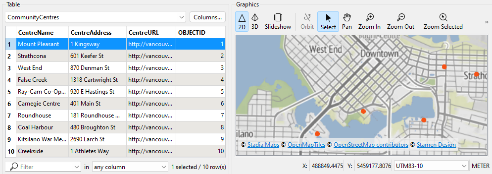
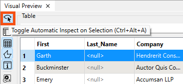
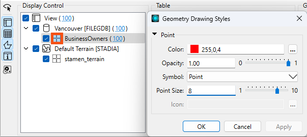
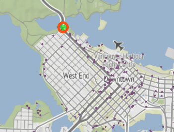

Learning Objectives
After completing this lesson, you’ll be able to:
- View tabular data using Visual Preview.
- Interact with spatial data using Visual Preview.
Terminology
Vector spatial data
Vector spatial data consists of points, lines, and polygons. At its core, it consists of lists of coordinates on a plane and information regarding how they are connected.
Vector data is good for representing discrete objects, such as the outlines of buildings (polygons).
Raster spatial data
Raster data comprises pixels, where a pixel's value (or color) represents the value of a phenomenon, e.g., the average annual precipitation. Standard imagery uses the visible spectrum like a regular photograph. However, other kinds of imagery are available. For example, imagery in the near-infrared band can be used to measure the prevalence of vegetation beyond what the human eye can detect.
Raster data is good for representing continuous data that varies over an entire area, such as elevation.
Resources
Spatial Data Overview
FME stands out in its robust support for spatial data among data integration tools.
Spatial data can be stored in vector or raster formats. Vector spatial data consists of points, lines, and polygons. At its core, it consists of lists of coordinates on a plane and information regarding how they are connected.
Raster data comprises pixels, where a pixel's value (or color) represents the value of a phenomenon, e.g., the average annual precipitation. Standard imagery uses the visible spectrum like a regular photograph. However, other kinds of imagery are available. For example, imagery in the near-infrared band can be used to measure the prevalence of vegetation beyond what the human eye can detect.
Raster data is better for representing continuous data that varies over an entire area, such as elevation. Vector data is better for representing discrete objects, such as the outlines of buildings (polygons).
| Geometry type |
Illustration |
Examples |
| Point |
 |
Cell towers
Community centers
Fire hydrants
Oil wells
|
| Line |
 |
Electricity distribution network
Pipelines
Roads
Trails
Water distribution network
|
| Polygon |
 |
Administrative borders
Building footprints
Service areas
Water bodies
Zoning districts
|
| Raster |
 |
Classified land use
Elevation
Orthophoto (a satellite or aerial photograph adjusted so the scale is uniform)
Scanned documents
|
Spatial data contains geometry data that describes the actual location of the data. It also usually includes attribute data that describes the features. For example, here is a dataset of point locations of community centers that includes attributes such as “CentreName” and “CentreAddress.”

Having geometry and attributes in the same dataset lets you query or filter the data. For example, you could filter the dataset of community centers to select the point with a “CentreName” that equals “Mount Pleasant.”

Spatial data can be used to create maps or analyze patterns like clusters. However, it must be integrated with other data sources to gain maximum value. For example, retail businesses combine existing store locations, road networks, and neighborhood demographic data to identify the best places to build new stores.
Integrating spatial with nonspatial data, such as spreadsheets or database tables, is also possible. This integration is possible if the nonspatial data has an attribute with spatial information. Many nonspatial datasets contain addresses, coordinates, or other identifiers. Combining these with spatial data allows you to unlock new insights. For example, retail businesses combine customer transaction data (containing their zip or postal code) with neighborhood demographic data to understand their customers and market their products or services more effectively.
Explore Visual Preview
Data inspection is an essential step in the data transformation process. Inspecting the output dataset to ensure the process's success is crucial.
Continuing with his workspace, Sven uses FME Workbench (2025.0 or later) to open the BusinessOwners written data in Visual Preview by selecting it and then clicking View Written Data.

Now that the BusinessOwners feature class (a geodatabase feature class is the equivalent of an FME feature type) in the Vancouver.gdb geodatabase is loaded into Visual Preview, Sven uses the Visual Preview toolbar to control the display. The Visual Preview will display the geometry of features in the Graphics View and the attributes in the Table View.
By default, Visual Preview automatically displays whichever object (feature type or transformer) is selected on the canvas. Suppose Sven selects another object on the canvas; Visual Preview displays that data. Sven doesn't want that to happen because he'll lose the view of the BusinessOwners feature type, so he clicks the Toggle Automatic Inspect on Selection button on the left side of Visual Preview to turn it off.

Change How Features Are Displayed
Sven wants to change the color and size of the points shown in the Graphics View to make the points easier to see against the background map. He clicks the Display Control button to open Display Control, which lets him see a list of the layers being inspected.

Sven could check layers on and off here but leaves them both enabled.
Clicking on the grid icon next to BusinessOwners opens the Geometry Styles dialog. Here, Sven can change the display symbology and color of the points. Sven selects red, increases the point size to 8, and then turns the background map back on.

Sven toggles off Display Control and Table View to allow more space for the Graphics View.

Map tiles © Stadia Maps, © OpenMapTiles, © OpenStreetMap contributors, © Stamen Design
Sven clicks on Zoom to Full Extent to see all of the data points.

Map tiles © Stadia Maps, © OpenMapTiles, © OpenStreetMap contributors, © Stamen Design

If you don't see Zoom to Full Extent button, click the two right-pointing arrows in the top right of the Graphics pane to view hidden toolbar buttons:

Visual Preview and the stand-alone application Data Inspector are not a Geographic Information System; they can not be used to create polished cartographic output, conduct interactive spatial analysis, or edit data. The purpose of Visual Preview and Data Inspector is to inspect data.
⭐ New for FME 2024.2: the Zoom Selected button is now a toggle. When toggled on, the Graphics view will zoom to the feature currently selected in Table View or the Feature Information Window. Changing the selected feature will zoom the Graphics view to the new feature. Additionally, we've changed the zoom amount so Visual Preview shows more context around the feature.
Exercise
Use Pan and Zoom to find the northernmost public art installation. Use Select to select it.
Use the Table View or Feature Information to note the installation's Title.

Map tiles © Stadia Maps, © OpenMapTiles, © OpenStreetMap contributors, © Stamen Design